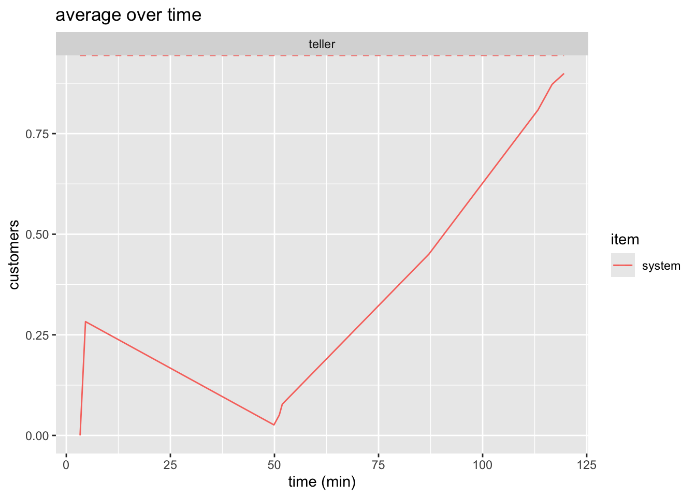
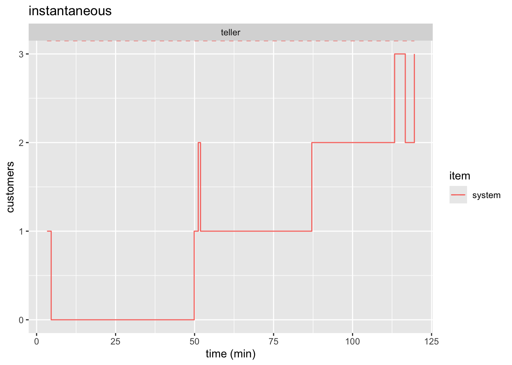
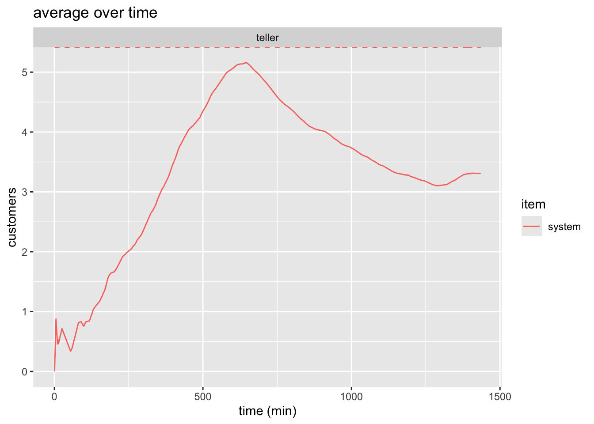
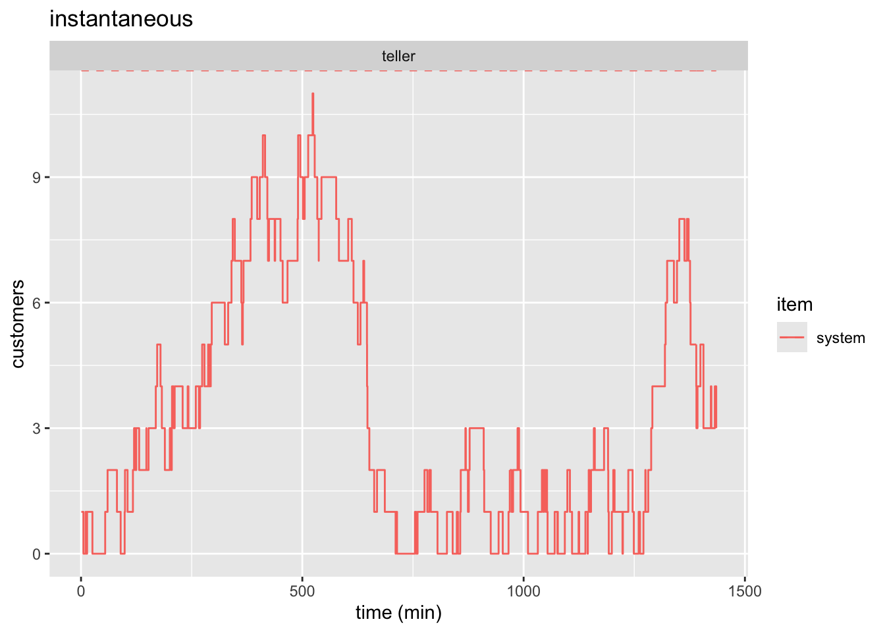
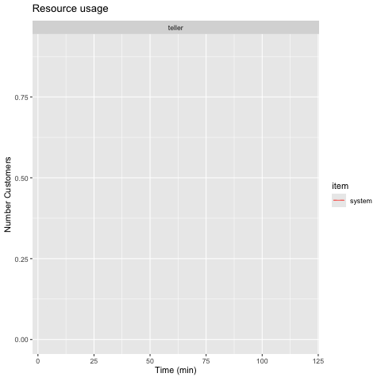
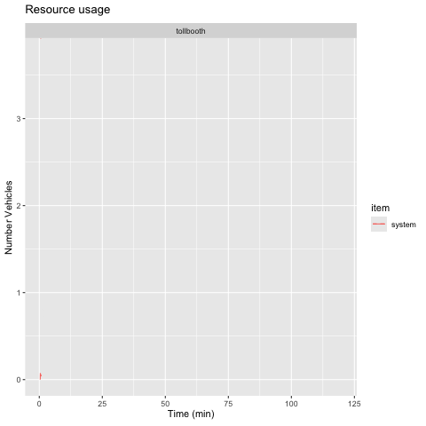

# setting random seed for reproducibilty
set.seed(1766)
# for plots, data manipulation, and output
library(tidyverse)
library(knitr)
# simulation package
library(simmer)
library(simmer.plot)
library(simmer.bricks)
# packages for making animations
library(gganimate)
library(gifski)HW1 Solution
1 Purpose
The purpose of this solution is to demonstrate how Quarto should be used to prepare future homework submissions. Additionally, this will show how simply these problems can be solved using simmer. Reports should follow the same principles with one exception. In homeworks, show all code in the cells by setting #| echo: true. In reports, hide the code with #| echo: false. Homeworks do not require extensive explanation of the process as the problems are straightforward, but I do need to see the code. Project reports, on the other hand, should emphasize the high-level modeling process, assumptions, results, and results discussion. Reports go out to many different entities in an organization and most will not want to see your code. Those that do will ask for it. The benefit of using Quarto is that you can then just send them the “.qmd” document and they can review everything.
2 General Notes
- Use small code chunks for readability and easier debugging.
- Comment non-obvious code to improve clarity.
- Reports: Focus on modeling, assumptions, and results—not code explanations.
- Include captions for figures and tables in reports.
- Homeworks: Make solutions clear and easy to find.
- Animations: Save locally and upload separately to Canvas.
3 Question 3
Suppose that customers arrive in a bank at a Poisson rate of one per every 15 minutes, and that the service time is exponential at a rate of of one service per 12 minutes. WE assume that there is no limit on the number of customers that could be in the system at the same time.
Develop a simulation model using R and run the simmulation for durations of 2 hours and 24 hours. Estimate the following statistics:
- The average number of customers in the system.
- The averagge amount of time a customer spends in the system
- Ceate an animation in R to illustrate the average number of customers in the system over the simulated 2-hours (120 mintutes) period
3.1 Approach
- Load Packages
- Model the system in
simmer - Run the simulation
- Extract required statistics
3.2 Loading Packages
3.3 Building simmer Model
First we will define the parameters in a way that is easy and clear to be referenced later. Then we need to define the trajectory, the resources, and the simmer environment.
3.3.1 Bank Parameters
bank_sim_time <- c(2*60, 24*60)
lambda_bank <- 1/15
arrival_bank <- function(n=1) {
rexp(n = n, rate = lambda_bank)
}
mu_bank <- 1/12
service_bank <- function(n=1) {
rexp(n = n, rate = mu_bank)
}3.3.2 Customer Trajectory
customer <- trajectory("customer") |>
visit("teller", service_bank)3.3.3 Bank Environment
bank <- simmer("bank") |>
add_resource("teller") |>
add_generator("customer", customer, arrival_bank)3.3.4 Run Simulation & Save Results
reset(bank) |> run(bank_sim_time[1])
bank_resources_2 <- get_mon_resources(bank)
bank_arrivals_2 <- get_mon_arrivals(bank)reset(bank) |> run(bank_sim_time[2])simmer environment: bank | now: 1440 | next: 1455.6246555489
{ Monitor: in memory }
{ Resource: teller | monitored: TRUE | server status: 1(1) | queue status: 2(Inf) }
{ Source: customer | monitored: 1 | n_generated: 103 }bank_resources_24 <- get_mon_resources(bank)
bank_arrivals_24 <- get_mon_arrivals(bank)3.3.5 Extract Statistics
resource_weighted_avg <- function(resource_data, item, sim_time) {
resource_data <- resource_data |>
arrange(time) |>
mutate(time_diff = lead(time, default = sim_time) - time)
return(sum(resource_data[[item]] * resource_data$time_diff) / sim_time)
}L_bank_2hr <- resource_weighted_avg(
bank_resources_2, "system", bank_sim_time[1])
L_bank_24hr <- resource_weighted_avg(
bank_resources_2, "system", bank_sim_time[2])W_bank_2hr <- mean(bank_arrivals_2$end_time - bank_arrivals_2$start_time)
W_bank_24hr <- mean(bank_arrivals_24$end_time - bank_arrivals_24$start_time)The results are summarized in Table 1
bank_summary_df <- tibble(
"Simulation Time (min)" = bank_sim_time,
"Avg Customers in System, L" = round(
c(L_bank_2hr, L_bank_24hr), digits = 2),
"Avg Time in System, W (min)" = round(
c(W_bank_2hr, W_bank_24hr), digits = 2)
)
kable(bank_summary_df)| Simulation Time (min) | Avg Customers in System, L | Avg Time in System, W (min) |
|---|---|---|
| 120 | 0.91 | 22.94 |
| 1440 | 2.83 | 47.46 |
3.3.6 Plot
See Figure 1 and Figure 3 for static plots.
plot(bank_resources_2, items = "system") +
labs(
x = "time (min)",
y = "customers",
title = "average over time"
)

plot(bank_resources_2, items = "system", steps = TRUE) +
labs(
x = "time (min)",
y = "customers",
title = "instantaneous"
)

plot(bank_resources_24, items = "system") +
labs(
x = "time (min)",
y = "customers",
title = "average over time"
)

plot(bank_resources_24, items = "system", steps = TRUE) +
labs(
x = "time (min)",
y = "customers",
title = "instantaneous"
)

3.3.7 Animation
We are tasked with animating the average number of customers in the system. This means we do not want the step-plot which gives the instantaneous number of people in the system. We have already generated this static plot in Figure 1. simmer.plot already handled getting the time-weighted average. All we need to do is animate it which is shown and explained in the code below.
Note
As I’ve pointed out before, you cannot insert a “.gif” into a pdf. You need to set the cell eval option to false as shown below. Run the cell by clicking the “Run Current Chunk” in RStudio.
```{r, animate-2hr-average}
#| eval: false
#| warning: false
1p <- plot(bank_resources_2, "teller", metric="usage", item="system") +
2 labs(
x="Time (min)",
y="Number Customers"
) +
3 transition_reveal(bank_resources_2$time)
4anim_save("bank_2hr_anim.gif", p)
```- 1
- Assign our plot to a variable
- 2
- Adjust x and y label
- 3
- Specify what part of the plot should be animated
- 4
- Save the animation.

4 Question 4
A tollgate is operated on a freeway wher vehicles arrive with a mean frequency of 4 vechiles per minute. THe mean time for completing payment of toll is 10 seconds. We assume that there is no limit on the number of vehicles that could be in the system at the same time. These data were obtained experimentally, and a statistical analysis indicated that there is no basis for rjecting the hypotheses that the arrival and service time distributions are exponential, and the inter-arrival and service times are independent.
Develop a simulation model using R and run the simulation for durations of 2 hours and 24 hours. Estimated the following statistics:
- The average number of vehicles in the system
- The average amount of time a vehicle spends in the system.
- The average amount of time a vehicel spends in the line.
- Create an animation in R to illustrate the average number of vehicles in the system over the simulatd 2-hours (120 minutes) period.
4.1 Tollbooth Parameters
The given parameters of the problem are defined below:
toll_sim_time <- c(2*60, 24*60)
lambda_toll <- 1/4
arrival_toll <- function(n=1) {
rexp(n=n, 1/lambda_toll)
}
mu_toll <- 10/60
service_toll <- function(n=1) {
rexp(n=n, 1/mu_toll)
}4.2 Tollbooth Simmer
We create our simmer model by creating a trajectory, a simmer environment, adding a resource, and adding a the trajectory.
vehicle_traj <- trajectory() |>
visit("tollbooth", service_toll)
tollbooth <- simmer() |>
add_resource("tollbooth") |>
add_generator("vehicle", vehicle_traj, arrival_toll)4.3 Tollbooth Results
Extract results using get_mon_arrivals and get_mon_resources which stands for get monitored arrivals and resources, respectively. This goes into the simulated environment and pulls out the data we need into tables which we can easily access.
# first reset the model, then run it for 2*60
reset(tollbooth) |> run(toll_sim_time[1])
# extract results
tollbooth_arrivals_2hr <- get_mon_arrivals(tollbooth)
tollbooth_resources_2hr <- get_mon_resources(tollbooth)
# repeat
reset(tollbooth) |> run(toll_sim_time[2])
tollbooth_arrivals_24hr <- get_mon_arrivals(tollbooth)
tollbooth_resources_24hr <- get_mon_resources(tollbooth)Now we calculate the weighted average for the number of vehicles in the system, the total time in the system, and the time waiting in the queue for both simulations.
# reusing the function written above to get the time-weighted average
L_booth_2hr <- resource_weighted_avg(
tollbooth_resources_2hr, "system", toll_sim_time[[1]])
# creating a column which calculates the time in the system for each vehicle
tollbooth_arrivals_2hr$system_time <-tollbooth_arrivals_2hr$end_time -
tollbooth_arrivals_2hr$start_time
# averaging this column
W_booth_2hr <- mean(tollbooth_arrivals_2hr$system_time)
tollbooth_arrivals_2hr$q_time <- tollbooth_arrivals_2hr$system_time -
tollbooth_arrivals_2hr$activity_time
Wq_booth_2hr <- mean(tollbooth_arrivals_2hr$q_time)We repeat the process for getting the stats for the 24-hour simulation.
# repeating for 24 hr sim
L_booth_24hr <- resource_weighted_avg(
tollbooth_resources_24hr, "system", toll_sim_time[[2]])
tollbooth_arrivals_24hr$system_time <-tollbooth_arrivals_24hr$end_time -
tollbooth_arrivals_24hr$start_time
W_booth_24hr <- mean(tollbooth_arrivals_24hr$system_time)
tollbooth_arrivals_24hr$q_time <- tollbooth_arrivals_24hr$system_time -
tollbooth_arrivals_24hr$activity_time
Wq_booth_24hr <- mean(tollbooth_arrivals_24hr$q_time)The results are summarized in Table 2.
tollboth_summary_df <- tibble(
"Simulation Time (min)" = toll_sim_time,
"Avg Vehicles in System, L" = round(
c(L_booth_2hr, L_booth_24hr), digits = 2),
"Avg Time in System, W (min)" = round(
c(W_booth_2hr, W_booth_24hr), digits = 2),
"Avg Waiting Time, W_q (min)" = round(
c(Wq_booth_2hr, Wq_booth_24hr), digits = 2)
)
kable(tollboth_summary_df)| Simulation Time (min) | Avg Vehicles in System, L | Avg Time in System, W (min) | Avg Waiting Time, W_q (min) |
|---|---|---|---|
| 120 | 1.89 | 0.49 | 0.31 |
| 1440 | 1.90 | 0.48 | 0.31 |
4.4 Animation
We follow the exact same process as before. We just change the variables we are referencing and the names (“clerk” becomes “tollbooth”, the y-label becomes “Number Vehicles”, the filename becomes “tollbooth_2hr_anim.gif”)
p <- plot(tollbooth_resources_2hr,
"tollbooth", metric="usage", item="system") +
labs(
x="Time (min)",
y="Number Vehicles"
) +
transition_reveal(tollbooth_resources_2hr$time)
anim_save("tollbooth_2hr_anim.gif", p)
